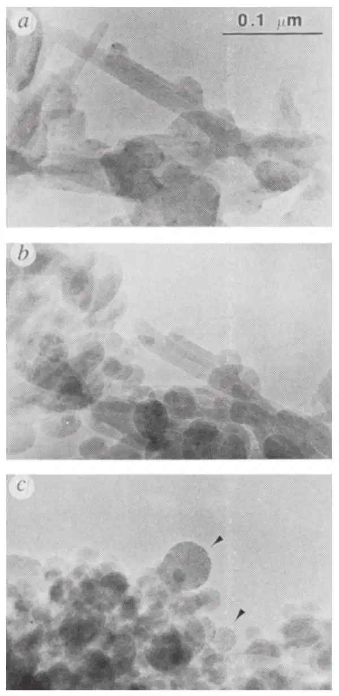
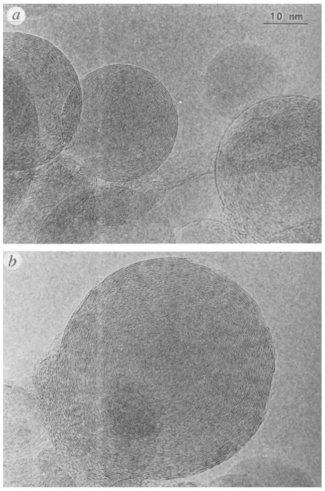
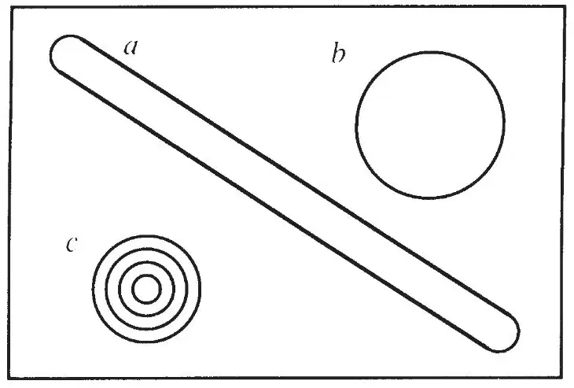
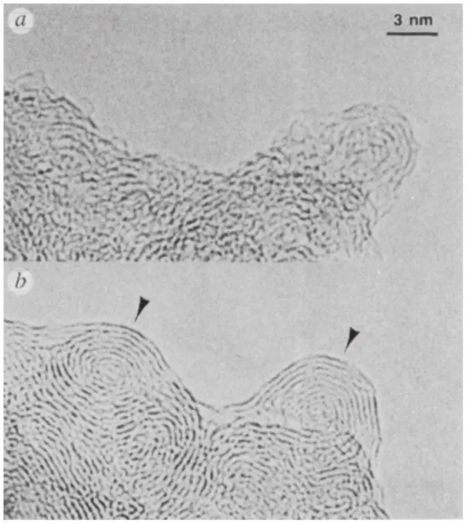

英文
英文丹尼尔·乌加特
编者按
在发现称为富勒烯的笼状碳分子和称为碳纳米管的微管结构分子后，有人估计层状石墨碳可能产生一系列折纸状纳米尺度分子。本文中，瑞士洛桑联邦理工学院的丹尼尔·乌加特报道了另一个这样的变体：由碳组成的球壳嵌套构成的洋葱状结构。一些人认为它们像巨型富勒烯，尽管人们知道其外壳中含有许多晶体缺陷和断裂。具有空心中心的“洋葱”碳已被用于封装材料的研究，在其中心的巨大压强可以把石墨状碳变成金刚石。 英文
巴克敏斯特富勒烯（C60）的发现[1]和它的批量制备[2]已经激发了大量研究。最近，人们已将注意力转向其他弯曲的石墨网络，例如巨型富勒烯（Cn，n>100）[3,4]和碳纳米管[5-8]。通常理论认为[9]，石墨层之所以发生弯曲，其目的在于消除出现于生长中的结构边缘的高能悬挂键。这里我要报道在高分辨率电子显微镜中的炭黑粒子和微管形石墨结构对于强电子束照射的反应；这样的条件类似于高温环境，能使结构获得一定程度的流动性。随着照射增强，存在着从初始物质向由同心石墨层组成的准球形颗粒的渐变式重组织化。这为提出[9]的富勒烯成核理论增加了支持，而且进一步指出，平面型石墨可能不是碳在有限尺寸体系中最稳定的同素异形体。 英文
一直以来人们都将C60分子的显著稳定性归因于其高度对称性结构，其中碳原子位于截顶二十面体的顶点处[1]。C60分子可以被看作是一个六角石墨层通过引入正五边形以消除所有悬挂键而卷曲成的一个空心球（直径为7.1 Å）。对于所有的富勒烯，由sp2轨道弯曲而产生的应力倾向于集中在五边形的顶点处。C60分子出色的稳定性归因于以下两个事实：它是不包含相邻五边形的最小碳笼，并且它的球状形态使应力得以对称地分布在所有原子上[10]。 英文
除C60之外，还观测到了圆柱形碳结构[5]，其中石墨层具有螺旋形排布方式。由此自然产生一个问题：碳蒸气的随机凝聚是以何种方式产生出这种对称的低熵形态的呢？也许以下问题是值得思考的，即碳的六边形网络作为弯曲或闭合层的生长比起传统的平面层生长更具有便易性。化学家习惯于认为石墨层结构是平面的，碳原子被限定于无限的六边形层中，就像铁丝网一样。在碳蒸气中，石墨层碎片可以含有很多悬挂键；它们很难保持平面形，而趋向于达到可能的最低能量的物理性质将会促使层通过卷曲消除其悬挂键[12]。在没有其他化学活性元素存在，以及有利于sp2碳网络形成的条件下，通过加热纯碳并适当地退火，应该有可能合成卷曲网状和闭合笼状的物质。实际上，这就是电弧放电的情况，这是一种目前用来大量制备富勒烯[2]、金属富勒烯[13]和石墨微管[14]的技术。 英文
在电子显微镜观测条件下，强烈的照射在某些方面类似于高温环境，使结构具有了流动性；例如，无定形碳薄膜在电子束照射下通常会产生轻微的石墨化。特别是，照射通常以能量吸收的方式加热样品并以电子激发的方式打断样品化学键。此外，高能粒子能将动量传递给核，使原子移动到晶格间隙位点（“撞出”）。利用高分辨率电子显微镜（HREM）中的电子轰击可以实现上述条件，同时可以观测到样品的变化过程，在有利条件下甚至可以观测到原子水平的细节。但是我们必须注意，由于激发过程的贡献，电子束加热可能不会导致与传统加热方式同样的结果。 英文
我们在一台300 kV HREM显微镜（飞利浦EM430 ST）中照射炭黑，使用的电子束剂量超过正常操作条件下的10~20倍（通常剂量为10~20 A·cm–2）。图1显示了一组经照射的石墨颗粒的图像序列，拍摄间隔为10分钟。初始炭黑是从电弧放电装置中收集到的，其中主要包含由共轴石墨管形成的纳米尺寸针状物，以及由小的平面型石墨薄片接合而形成的一些多面体石墨颗粒（图1a）。所有颗粒上都覆盖着一层薄的无定形碳。在图像序列的中间部分（图1b）里，颗粒呈现出更为明显的曲率，特别是，微管型结构正在瓦解。在这个阶段中，无定形碳层石墨化并外延到颗粒上。最后（图1c），电子退火产生出一种几乎完全由球状颗粒组成的样品。对颗粒的详细检测表明，它们是由同心球形石墨笼的聚集体构成的（参见图2），层与层之间的距离和块状石墨中的相吻合（d002＝3.34 Å）。球层中明显的无序性是由拍摄显微图像所必需的低电子剂量产生的；在这样的条件下，电子束的加热效应不足以使结构重组回闭合壳层结构。不过，在短得多的时间尺度上的成像使我们得以观测更完整的结构。已有人提出这些结构是存在的[15-17]。 英文

图1．炭黑遭到强电子束照射的透射电子显微图序列。a，含微管或多面体石墨颗粒的初始炭黑；b，强照射10分钟后，炭黑中的颗粒，尤其是石墨针状物中，出现了明显向球形转变的趋势；c，20分钟后，炭黑基本上毫无例外地由准球形石墨颗粒组成。继续照射不再产生结构上可观测的显著变化。 英文
最终的球形结构并不对应于具有相同原子数目的管到球的变形（参见图3a、b中单壳层颗粒的图解），而是形成包含一个很小的中心笼的多层球体（图3c）。最内一层尺寸的减少（0.6~1 nm）使得壳层数目增加。根据欧拉定理，任一闭合六方网络恰好包含12个五边形环；这就是管（图3a，五边形位于圆柱体末端的半球拱处）或者球形笼（图3b）的情况。图3c中的洋葱状颗粒是由四个闭合壳层形成的。因此，它包含四倍的五边形数。我们的结果为石墨在其六边形网络中包含五边形并且形成弯曲结构的自发倾向提供了清晰的实验证据。因此，它们支持了为解释富勒烯能从碳蒸气中生长出来而提出的悬挂键数目最小化的理论[9]。 英文

图2．图1c中箭头所指示的石墨颗粒的详细结构。暗衬度环大致上对应于原子的位置，而环之间的距离则对应于块状石墨的（002）晶格参数。注意颗粒明显为球形。 英文

图3．由相等的石墨表面形成的三维结构示意图：a，用半球圆拱封口的圆柱形结构（直径Ø≈1 nm，长13.7 nm）；b，球形笼（Ø≈3.74 nm）；c，由四个壳层形成的洋葱状结构（Ø≈2.72 nm），中心的那个是C60分子。 英文
弯曲石墨层还能通过对无定形碳颗粒的照射而形成（图4）。所生成的石墨结构是天然弯曲的，并且很容易识别出两个成核中心（图4b中以箭头标出），球形颗粒就从这里开始形成。继续照射退火导致两个石墨球形颗粒的分离。 英文

图4．接受电子束照射的无定形碳的透射电子显微图像。a，初始颗粒；b，经过10分钟强照射后，出现石墨化（用箭头标出），层呈现出清晰的形成闭合笼的倾向。继续照射会导致两个石墨球体的分离。 英文
这些多壳层球体的形成机制是基于照射激发石墨化的原理，并且与最初在激光气化和电弧放电实验中所考虑的堆积机制有很大不同，后者会产生出螺旋形多壳层颗粒[9]。 英文
图1中显示的图像序列清楚地表明，如果提供足够的能量，球形结构比微管结构更容易形成。这一观测结果与对巨型富勒烯（单层）的预测[18,19]是一致的，但是要将计算结果与当前实验进行比较，则同心层之间的范德华相互作用也应包含在内。 英文
我们所观测到的“球形石墨”可能具有相当大的尺寸（图2b中显示的颗粒，直径达到47 nm，约70个壳层）。在少数情况下，我们甚至曾观测到直径达几个微米的球体，不过要达到这个范围的尺寸需要在颗粒变成球形之前延长照射时间。我们不应该排除下列可能性：更大的（可能是宏观水平的）石墨球体可以利用碳的充分退火而生产出来；所得到的最大尺寸将为我们提供关于闭合石墨层中存在的变形的信息。平面型石墨是纯碳的最稳定形态这一传统观念就不得不重新接受严肃的审视：平坦的石墨薄片不可能是完美的，其中包含很多悬挂键，它们通常是通过吸附杂质（例如氢）而得以消除的。这里所展示的“球形石墨”是一种纯净的碳物质，其中不含悬挂键，而且凭借其球形形状的非平面几何性质而使应力得到均匀分布。那些习惯于传统平面型石墨且最初为神奇的富勒烯而惊奇的研究者，现在必须面对足以证明在高温或强照射环境中更有利于球型碳网络形成的证据。 英文
这一观念还引出了一个关于碳的固态同素异形体的问题。当克雷奇默等人[2]第一次合成大量C60分子时，他们制备出了一种新型——第三种形式——的固态碳（称为富勒烯），它是C60球体的三维堆积，有别于两种传统晶体形式的碳：石墨和金刚石。考虑到我们观测到的石墨形成多壳层球体（“洋葱”）的趋势——单壳层富勒烯只是第一位成员而已，我们猜测富勒烯固体是一族新的固态碳物质的第一位成员，这族固态碳物质可以通过范德华相互作用由这些洋葱状石墨球体堆积形成。要制备和分离多壳层石墨球体还需要进一步的实验研究，但是一大族碳材料正等待着实验科学家技能的发掘。 英文
（王耀杨 翻译；顾镇南 审稿）